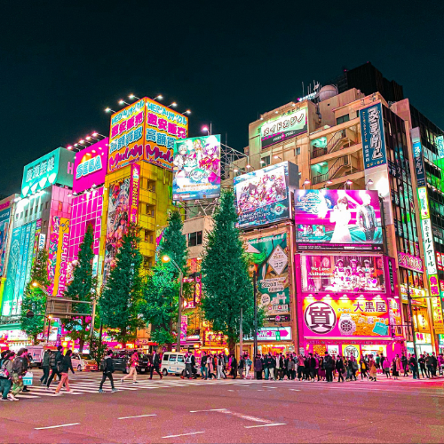

Akihabara – Tokyo’s Ultimate Electric Town and Otaku Paradise
Akihabara (秋葉原) is the world-renowned hub of Japanese pop culture, where technology, anime, manga, and gaming intersect. Known as "Electric Town", Akihabara draws millions of visitors each year eager to explore the latest gadgets, rare collectibles, and vibrant otaku culture.
The Heart of Electronics and Tech Shopping
Since the post-war era, Akihabara has been Japan's premier destination for consumer electronics. Here, you'll find massive multi-story stores like Yodobashi Camera and countless smaller shops selling everything from cameras to computer parts. Whether you’re a tech enthusiast or casual shopper, Akihabara offers unbeatable variety and prices.
Explore Anime, Manga, and Otaku Culture
Akihabara is the go-to place for anime and manga fans, packed with specialty shops, themed cafes, and arcades. Don't miss iconic spots like Mandarake, where collectors hunt for rare figures and manga editions, or the popular maid cafes, where waitresses in cosplay entertain guests with unique performances.
Gaming Arcades and Pop Culture Experiences
From retro arcade halls to cutting-edge virtual reality experiences, Akihabara has something for every gamer. Visit SEGA and Taito arcades for classic and new games or catch live shows and events that celebrate Japan's dynamic pop culture scene.
How to Get to Akihabara
- 🌸 From Tokyo Station: 5-minute JR Yamanote Line ride to Akihabara Station
- 🌸 Direct access from Akihabara Station to the main shopping streets
- 🌸 Opening hours: Most shops open from 10:00 AM to 8:00 PM
- 🌸 Best photo spots: Chuo Dori street, iconic billboards, and themed cafes
Why Akihabara Is a Must-Visit for Tokyo Travelers
Whether you're a tech lover, anime fan, or curious traveler, Akihabara offers a uniquely vibrant atmosphere that blends Japan’s cutting-edge innovation with its rich pop culture heritage. It’s a must-see district that showcases the heart of modern Tokyo.
Tags: Akihabara, Tokyo electronics district, anime Tokyo, manga shops, otaku culture Japan, maid cafes, gaming arcades Tokyo, Japan pop culture, Electric Town Tokyo
Planning to visit Akihabara?
To get the most immersive and insightful experience, we recommend booking a certified local private guide from our team. All our guides are licensed professionals officially recognized by the Japanese government, offering personalized tours tailored to your interests. Please contact your selected guide in advance to confirm availability and get expert assistance for your trip.